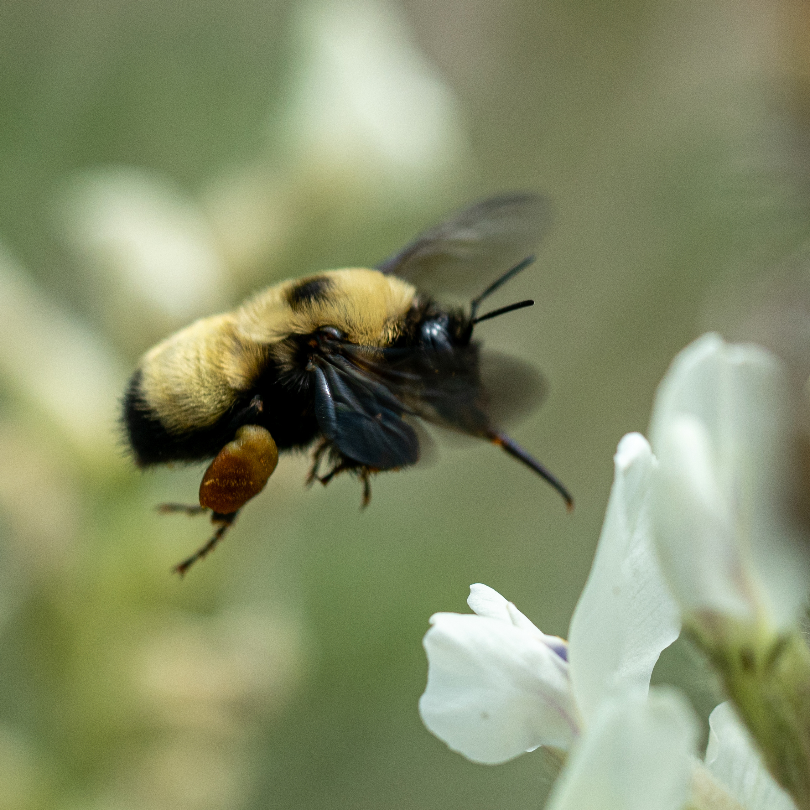
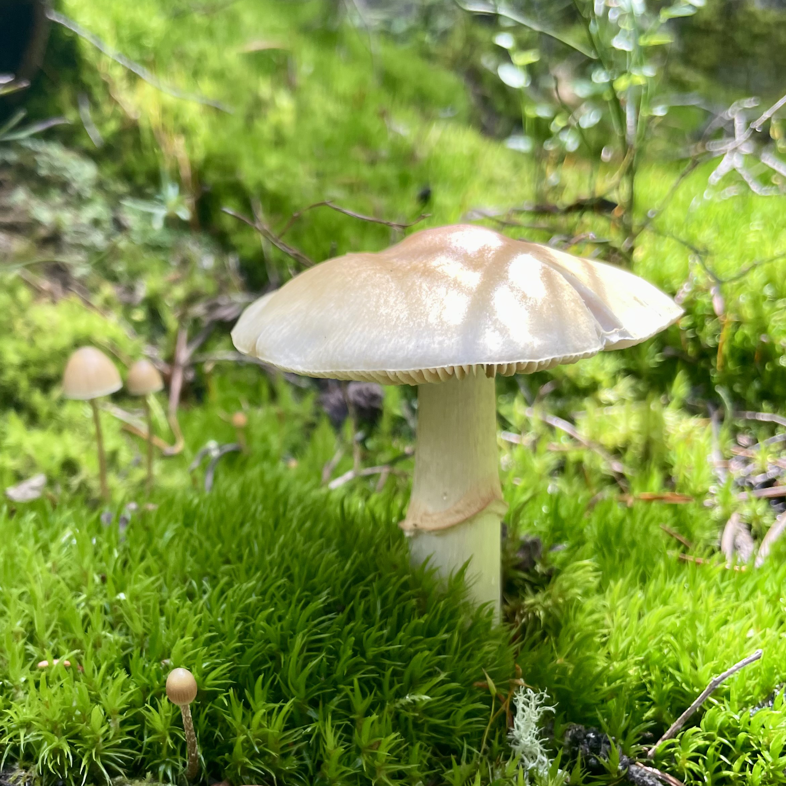
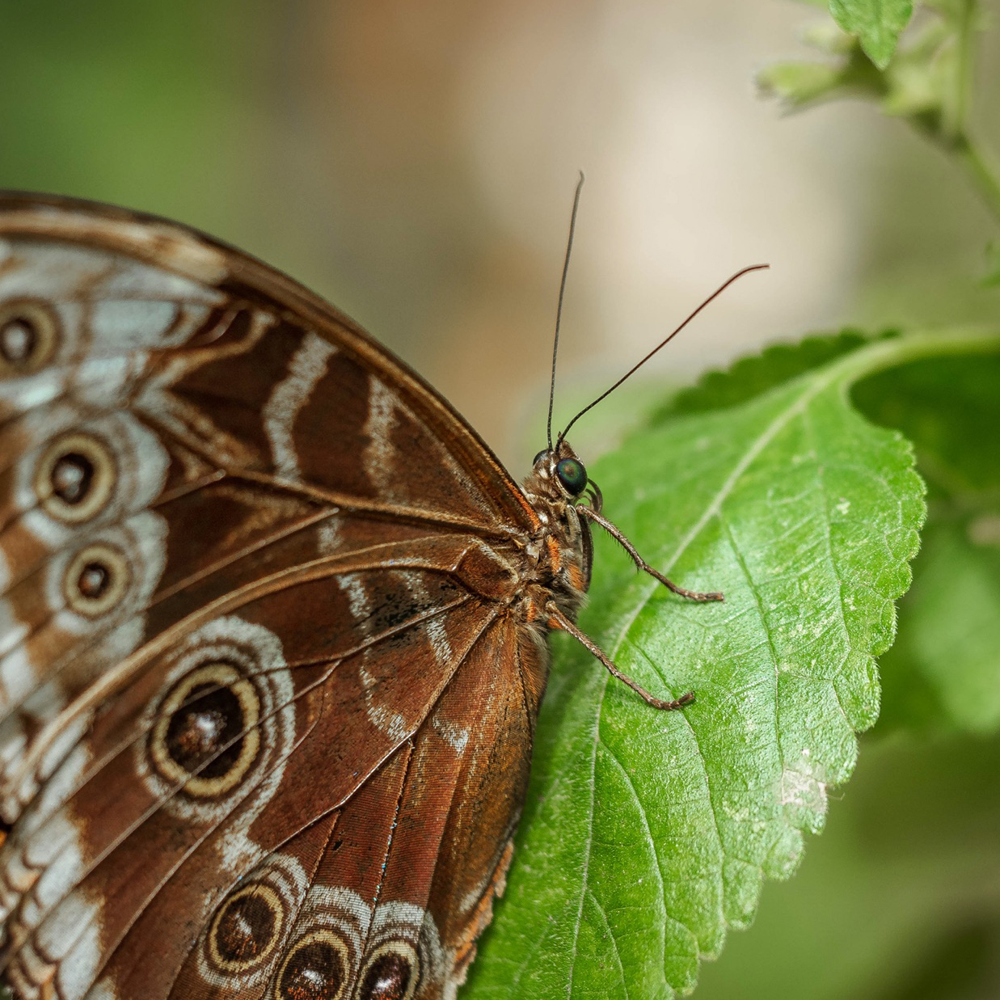
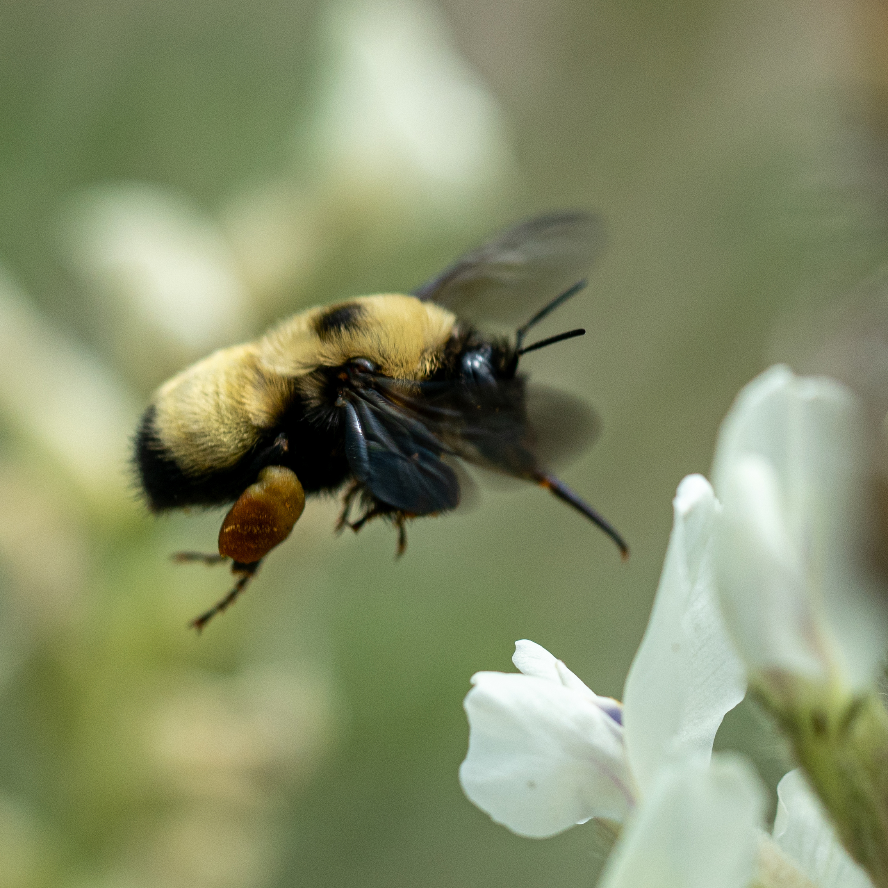
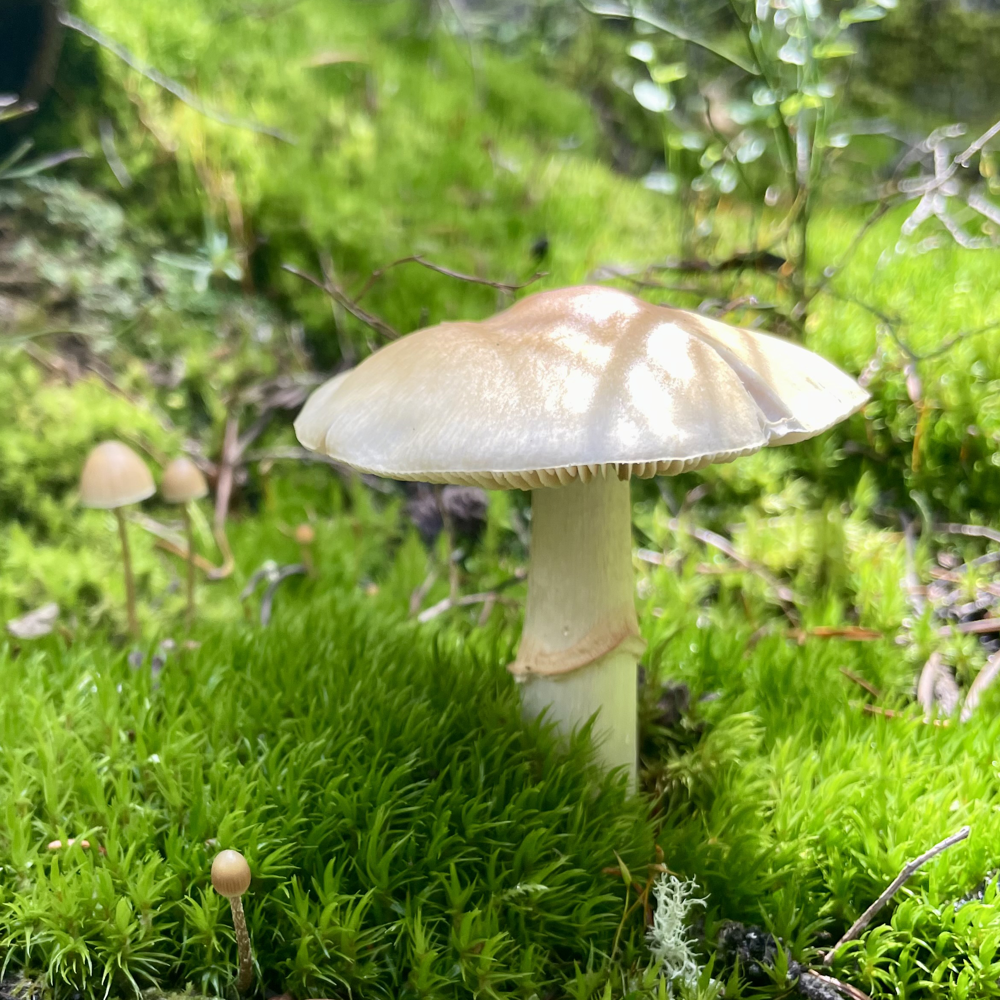
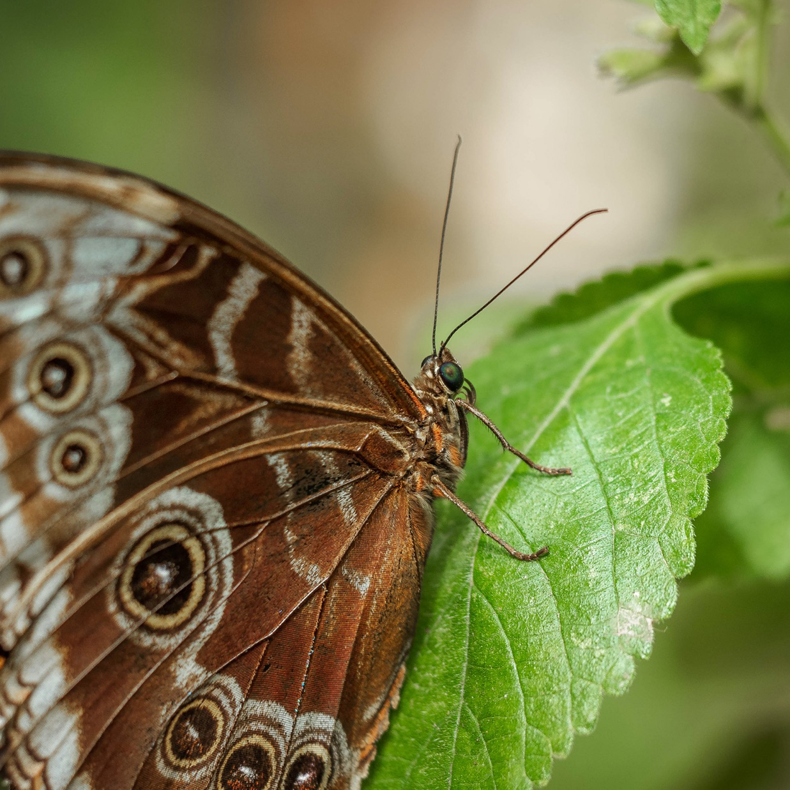

Jackson R. Strand
I am currently a PhD candidate at Montana State University studying entomology. I live in Bozeman, MT with my wife Grace.
Education
MS Entomology - Montana State University
BS Biology - University of Minnesota
Research Interests
I am broadly interested in how insects impact the lives of humans and how we can better utilize them to positively impact modern issues such as crop yield, climate change, and waste management.
 






Education
- Graduate Committee: Dr. David Weaver (co-chair), Dr. Tracy Sterling (co-chair), Dr. Robert Peterson
- Minor: Marine Biology
Publications
- Strand JR, Peterson RKD, Sterling TM, Weaver DK. 2024. Sensory and behavioral responses of braconid parasitoids to changes in volatile emissions induced by wheat stem sawfly (Hymenoptera: Cephidae) larval feeding in winter wheat and smooth brome. Journal of Insect Science. (in review)
- Strand JR, Peterson RKD, Sterling TM, Weaver DK. 2024. Agroecological importance of smooth brome in managing wheat stem sawfly (Hymenoptera: Cephidae) via associated braconid parasitoids. Journal of Economic Entomology. DOI: 10.1093/jee/toae246
Honors & Awards
- The Graduate School, Montana State University
- Montana State University Library
- Funded the publication of Strand et al. 2024
- Entomology 2023, National Harbor, MD
- Entomological Society of America
- College of Agriculture, Montana State University
- 2023 LRES GSO Student Research Colloquium
- LRES Graduate Student Organization, Montana State University
- Montana Grain Growers Association
- The Graduate School, Montana State University
Seminars and Presentations
underline = presenter- SE Sing, Strand JR, Peterson RKD, Weaver DK. 2025. Evaluating Host Preferences in Biological Control: Behavioral and Electrophysiological Responses of Mecinus janthinus and M. janthiniformis to Invasive Toadflax Species. National Forum on Biological Control Conference. Annapolis, MD. (scheduled)
- Strand JR, Peterson RKD, Sterling TM, Weaver DK. 2024. Agroecological importance of smooth brome in managing wheat stem sawfly (Hymenoptera: Cephidae) via its associated braconid parasitoids. Session: Grad Competition, Plant-Insect Ecosystems: IPM – General and Field Crops. Annual Meeting of the Entomological Society of America, Phoenix, AZ.
- Strand JR, Weaver DK, Sterling TM, Peterson RKD. 2024. The role of chemical ecology and agroecological importance of smooth brome in biological control of the wheat stem sawfly by native parasitoids. Masters of Entomology Defense. Montana State University, Bozeman, MT.
- Sing SE, Ward SM, Peterson RKD, Strand JR, Friesenhahn E, Holland M, Hubbard CE, Randall CB, Weaver DK. 2024. Biological control of hybrid toadflax: insights from chemical ecology. National Forum on Biological Control Conference. Annapolis, MD.
- Strand JR, Weaver DK, Sterling TM, Peterson RKD. 2023. Using organic volatile compounds to assess the relationship between wheat stem sawfly, parasitoids, and smooth brome. Session: Grad Competition, Plant-Insect Ecosystems: Chemical Ecology 2. Annual Meeting of the Entomological Society of America, National Harbor, MD. Second place in section.
- Strand JR, Weaver DK, Sterling TM, Peterson RKD. 2023. The importance of smooth brome and parasitoids in wheat stem sawfly biocontrol. 2023 Land Resources and Environmental Sciences Graduate Student Organization Research Colloquium. Montana State University, Bozeman, MT. First place overall.
- Strand JR, Weaver DK, Sterling TM, Peterson RKD. 2022. Using organic volatile compounds to assess the relationship between wheat stem sawfly, parasitoids, and smooth brome. Session: Grad Competition, Plant-Insect Ecosystems: Chemical Ecology 1. Annual Meeting of the Entomological Society of America. Vancouver, BC, Canada.
- Strand JR, Weaver DK, Sterling TM, Peterson RKD. 2022. Importance of parasitoids and smooth brome for integrated pest management of wheat stem sawfly. 2022 Land Resources and Environmental Sciences Graduate Student Organization Research Colloquium. Montana State University, Bozeman, MT.
- Strand JR, Weaver DK, Sterling TM, Peterson RKD. 2021. Importance of parasitoids and smooth brome for integrated pest management of wheat stem sawfly. Session: Plant Insect-Ecosystems: IPM – General. Annual Meeting of the Entomological Society of America, Denver, CO.
- Understanding Wheat Stem Sawfly. 2022 Integrated Pest Management Workshop. Montana State University, Bozeman, MT.
Teaching
Montana State University
Integrated Pest Management (TA), 3 credits (AGSC 401)
Fall 2023, 20 undergraduates, 10 graduate students
Online course taught by Dr. David Weaver
Service
Society Memberships
Active Community Volunteer
Co-Hosted Events
Student Organized Conferences
2024 LRES-PSPP Student Research Symposium
Role: Primary event organizer & emcee
Location: Montana State University, Bozeman, MT
Date: April 18, 2024
Hyperlink: 2024 Symposium2023 LRES Colloquium
Role: Treasurer
Location: Montana State University, Bozeman, MT
Date: April 13, 20232022 LRES Colloquium
Role: Treasurer
Location: Montana State University, Bozeman, MT
Date: April 29, 2022
Employment History
- Provided digital support between 3M employees and the 3M Chemical Data Management System (CDMS).
- Integrated, tested, and supported user and data interface between CDMS and SAP.
- Generated, designed, and communicated unique, detailed reports of material information using SQL, Microsoft Excel, and SAP.
- Worked on a team to collect and analyze mosquito larvae samples from wetland areas across the St. Paul metropolitan area.
- Independently maintained low adult mosquito populations in Oakdale, MN by surveying and treating both adults and larvae.
- Maintained healthy conditions for equine patients at the University of Minnesota Horse Veterinary Center and Large Animal Hospital.
- Trained and managed new members of the crew.